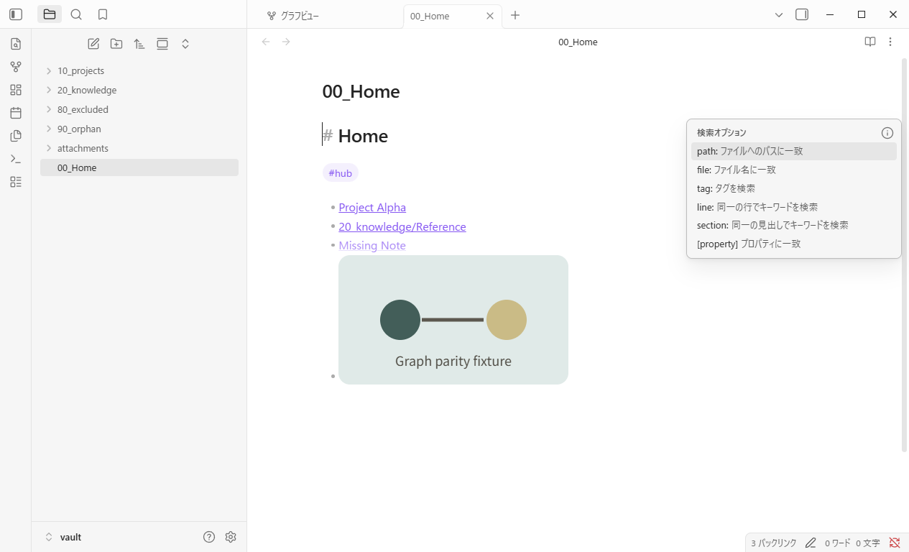
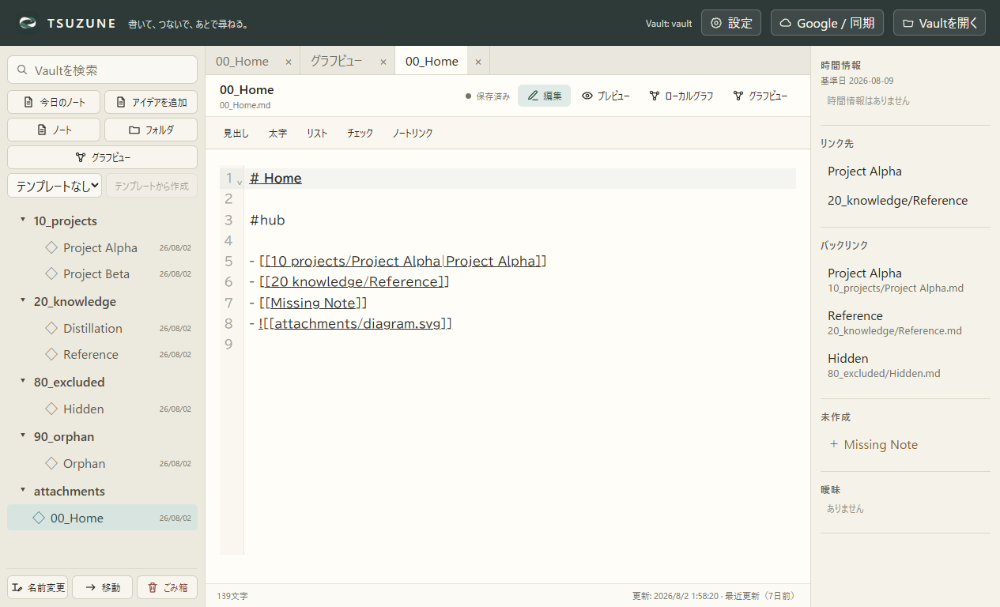
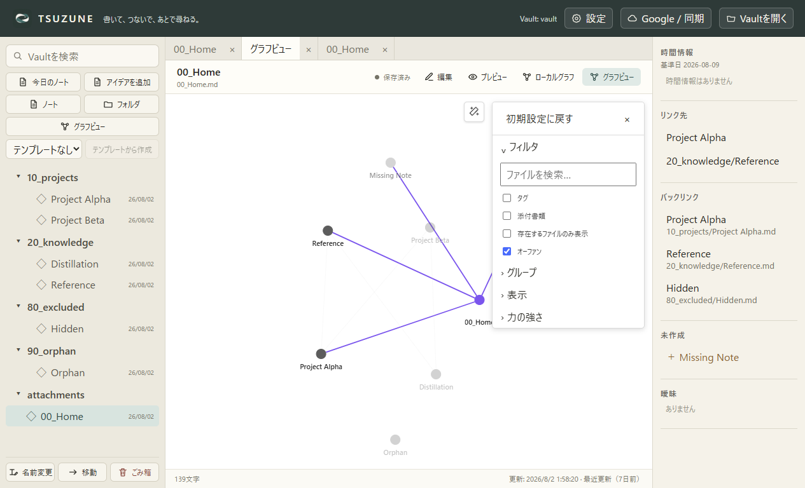

GP0-3b-g · 固定公開UI比較
ノートを開いても、グラフはタブに残る。
Obsidian Desktop 1.13.4とTSUZUNEを同じfixture、Global Graph、1265×768、DPR 1、ライトテーマで比較しました。
matched: 元Global Graph workspaceを保持
操作結果



比較
| 確認項目 | Obsidian | TSUZUNE | 判定 |
|---|---|---|---|
| 対象noteの新規タブを生成して選択 | true | true | matched |
| noteを開いた後も元Global Graphを別タブとして保持 | true | true | matched |
| TSUZUNEの保持タブからGlobal Graphへ復帰 | retained leaf established; return click not separately captured | true | tsuzune-verified |
確定範囲はGraph workspace保持とTSUZUNE内の復帰操作です。タブ復元・分割・並べ替え、物理入力、ピクセル一致は未証明です。